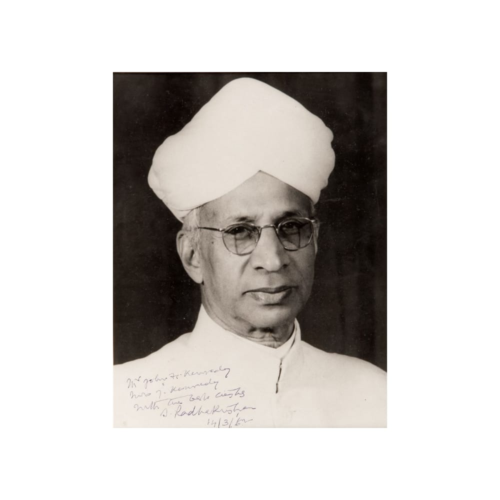

"The aim of education is not the acquisition of information, although important, or acquisition of technical skills, though essential in modern society, but the development of that bent of mind, attitude of reason, that spirit of democracy which will make us responsible citizens."
- Dr S.Radhakrishnan
